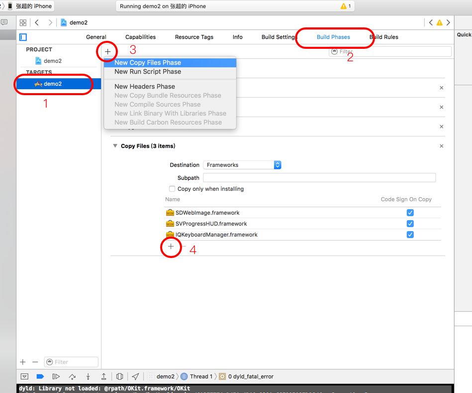

微娱乐SDK接入文档(iOS ver 0.1)
- App接入准备材料
- 系统支持版本
- 第三方框架
- SDK结构
- Framework接入步骤
- Framework接入常见问题
- 配置文件theme.json说明
- 配置文件net.json说明
- 界面设计
- 用户接入流程
- 积分接入方法
- 接口规则
- 通信接口规则
App接入准备材料
- App图标 (推荐尺寸 512 px * 512 px , png格式)
- App截图 (最少两张，推荐长宽比 4:3，宽度不小于640 px)
- App名称
- App简介
- App发行公司
- App发行时间
- App链接地址
- 推荐广告位横幅 (最少一张，设计参考下图)

系统支持版本
微娱乐SDK向下支持到iOS7.0版本，更低版本的系统无法使用,开发者应增加判断，拒绝iOS 6的用户打开微娱乐相关页面。
第三方框架
微娱乐SDK使用了部分知名的第三方开源代码，需要使用方将其一并加入到项目工程中。
这些框架包括：
| 名称 | 说明 | Github网址 | CocoaPods |
|---|---|---|---|
| SDWebImage | 网络图片请求和缓存 | https://github.com/rs/SDWebImage | pod 'SDWebImage' |
| IQKeyboardManager | 键盘管理 | https://github.com/hackiftekhar/IQKeyboardManager | pod 'IQKeyboardManager' |
| SVProgressHUD | HUD显示 | https://github.com/SVProgressHUD/SVProgressHUD | pod 'SVProgressHUD' |
接入方式
第三方框架的接入方式有三种，一是直接从Github上下载源代码放入项目中；二是下载源代码后编译成静态库或者动态库引入；第三种是比较推荐的方式，使用CocoaPods来管理第三方源代码，具体教程参见http://blog.csdn.net/showhilllee/article/details/38398119/
SDK结构
| 文件名 | 描述 |
|---|---|
| OKit.xcassets | SDK图片资源包 |
| theme.json | UI样式配置文件 |
| net.json | 服务器配置文件 |
| OKit.framework | 框架文件 |
使用时需要将以上文件全部放入工程项目。
Framework接入步骤
- 将SDK中的四个文件和文件包导入项目中
- 在info.plist中加入键值
App Transport Security Settings－Dictionary，并在其中加入Allow Arbitrary Loads-YES, 目前的版本API未使用https，所以需要项目放宽一下限制。我们将在接下来的版本中，发布https服务。 在AppDelegate中加入如下代码，设置主题风格
#import <OKit/OTheme.h> #import <OKit/OKitConfig.h> - (BOOL)application:(UIApplication *)application didFinishLaunchingWithOptions:(NSDictionary *)launchOptions { // Override point for customization after application launch. [OKitConfig configWithAppID:@"123" appKey:@"345"]; // APPID和APPKey由趣道提供 [[OTheme sharedInstance] setThemeWithIndex:1]; // 设置主题风格 return YES; }在需要实例化微娱乐入口的地方，按照如下方法调用
NSBundle * bundle = [NSBundle bundleForClass:NSClassFromString(@"OKMainViewController")]; UIStoryboard* storyboard = [UIStoryboard storyboardWithName:@"OKMain" bundle:bundle]; UIViewController* v = [storyboard instantiateViewControllerWithIdentifier:@"EnterOfQudao"]; [self presentViewController:v animated:YES completion:nil];
Framework接入常见问题
dyld: Library not loaded: @rpath/OKit.framework/OKit
Referenced from: /var/containers/Bundle/Application/6A3FF774-D45A-4DA8-8281-C6F895987D96/demo2.app/demo2
Reason: image not found
运行时如果出现上面的报错，请执行下面的步骤：

- 选择项目
Target - 打开
Build Phases - 新建
New Copy Files Phase Destination选择Frameworks，添加需要Copy的Frameworks即可
配置文件theme.json说明
{
"count" : 3, //主题数量
"theme" : [
{
"name" : "扁平", //主题描述
"pre" : "metro", //文件前缀
"textColor": "#4A4A49", //基本文字颜色
"mainTextColor": "#000000", //主体文字颜色
"subTextColor" : "#7B7C7D", //次主体文字颜色
"statusBar": "dark", //电池条风格，dark 、 light
"navibar-color": "", //导航条颜色，可以不填，则为透明
"background-image":"", //背景图片名称，可以为链接，可以不填
"background-color":"#ffffff" //背景颜色，可以不填，如填写，忽略背景图片
}
]
}
注： 文件前缀对应OKit.xcassets中的主题包
配置文件net.json说明
未完待续
界面设计
SDK使用字体Family： PingFang-SC
用户接入流程
接入方式
- 使用微娱乐内置用户UI系统，包括了注册、登陆、找回密码、个人中心等功能。
- 使用微娱乐内置用户相关操作类
积分接入方法
服务器接口调用回调
任务接口
Title:通信过程 APP内置SDK->微娱乐服务器:完成任务，通知服务器 微娱乐服务器->APP服务器: 通知App服务器完成积分累加 APP服务器->微娱乐服务器: 结果回调 微娱乐服务器->APP内置SDK:结果回调，刷新界面商城接口
Title:通信过程 APP内置SDK->微娱乐服务器: 购买商品，消耗积分 微娱乐服务器->APP服务器: 通知App服务器完成积分扣除 APP服务器->微娱乐服务器: 结果回调 微娱乐服务器->APP内置SDK:结果回调，刷新界面
接口规则
未完待续
通信接口规则
验证参数
验证参数 hash ＝ MD5(用户身份令牌＋时间戳＋GameKey)
返回码
| 返回码 | 说明 |
|---|---|
| 1 | 成功 |
| 0 | 失败 |
| -1 | 缺少参数 |
| -2 | 验证码错误 |
| -3 | 用户不存在 |